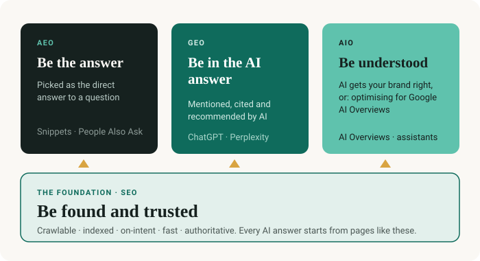

SEO vs GEO vs AEO vs AIO: what's the difference, and which matters?
SEO gets your pages ranked in Google. AEO gets your content picked as the direct answer to a question. GEO gets your brand mentioned and recommended in AI-generated answers. AIO makes sure AI systems understand your brand correctly, and some people use it to mean optimising for Google's AI Overviews. They overlap heavily, and all of them depend on good SEO, so that's where to start.
The four terms at a glance
| Term | Stands for | The goal | Where it shows up |
|---|---|---|---|
| SEO | Search engine optimisation | Rank your pages for the searches your buyers make | Google and Bing results |
| AEO | Answer engine optimisation | Be picked as the direct answer to a question | Featured snippets, People Also Ask, voice assistants, AI answers |
| GEO | Generative engine optimisation | Be mentioned, cited and recommended in AI-generated answers | ChatGPT, Perplexity, Google AI Overviews and AI Mode, Copilot |
| AIO | AI optimisation (or AI Overviews optimisation) | Make sure AI systems describe your brand correctly | Any AI tool that talks about you |

Are these official terms?
No. None of them is a standard, and you'll see agencies define them differently. Google's own position is that you don't need anything special for its AI features. Its guidance says there are "no additional requirements to appear in AI Overviews or AI Mode, nor other special optimizations necessary", and that "the best practices for SEO remain relevant".
I agree with that, and I still use the terms at work. Doing well in Google and being recommended by an AI tool are different outcomes, measured in different ways. Having a name for each goal makes it easier to plan for it and to explain it to people who don't work in SEO.
What is SEO?
Search engine optimisation is the work of getting your pages to show up when someone searches. It covers the technical side (can Google crawl and index the page, and is it fast?), the content (does it answer what the searcher wants?) and authority (do other sites and people trust you?).
Everything else in this post depends on it. AI Overviews are built from pages Google has indexed. ChatGPT and Perplexity search the web too. If your pages can't be found and trusted, there's nothing for an AI tool to quote.
What is AEO?
Answer engine optimisation is about structuring content so it gets picked as the answer to a question, rather than one link among ten. The term was around before ChatGPT, when the goal was featured snippets and voice assistants. The same habits now help with AI answers too:
- Answer the question in the first two or three sentences.
- Use headings phrased the way people actually ask.
- Keep each section focused on one idea, so it still makes sense when quoted on its own.
What is GEO?
Generative engine optimisation is about getting your brand included in answers written by AI, whether it's a passing mention, a recommendation or a cited source. The term comes from a 2023 research paper by Aggarwal and colleagues, later published at KDD 2024. They reported that content changes could boost visibility in AI-generated responses "by up to 40%".
That figure comes from tests on a research benchmark, not from live Google or ChatGPT results, so treat it as a sign of what's possible rather than a promise. In my experience, the things that matter most for GEO are original information that only you have, and being clearly associated with the topic across many sources, not just your own website.
What is AIO?
AIO is the loosest of the four, because people use it in two ways:
- AI optimisation in general: making sure any AI system, whether a chatbot, an assistant or an AI agent, can understand who you are and what you do, and describes you accurately.
- AI Overviews optimisation: getting your content into Google's AI Overviews specifically.
When someone uses the term, it's worth asking which they mean. In practice, the work for both overlaps with SEO, AEO and GEO.
How I explain these terms at work
I do use these terms with my boss and colleagues. The simplest version I've found is this: SEO is about getting our website to show up when someone searches a keyword. GEO and AEO are about making sure AI tools actually recommend us when someone asks a question. More people now ask ChatGPT or Google's AI for advice instead of clicking through ten links, so we want our brand to be part of the answer.
To leadership
Leadership cares about market share, winning customers and staying ahead of competitors, so I frame it around those:
- The risk. Fewer people click through to websites when an AI summary appears. Pew Research found that Google users clicked a result in 8% of visits when an AI summary appeared, compared with 15% when it didn't. If a buyer asks an AI tool for the best firm in our space and we aren't mentioned, we may not even make the shortlist.
- The opportunity. In my sector, most competitors are still focused only on Google rankings. Working on AI visibility now gives us a chance to become a default recommendation before they catch up.
- The business impact. Overall traffic from simple informational searches may dip. But in my experience, the people who arrive after an AI tool has recommended us are better qualified and more likely to get in touch.
To colleagues
For the people doing the work, I focus on what changes day to day:
- Content writers: instead of long posts padded with keywords, write clear, direct answers. Concise definitions, bullet points, comparison tables and original data are much easier for AI tools to quote.
- Web and product teams: make sure the site states plainly who we are, what we do and, where it's public, what we charge. Keep those facts consistent across the website, LinkedIn and directories, and back them up with schema markup. That's what stops AI tools from getting us wrong.
Which one should you prioritise first?
SEO, every time. It builds the crawlability, authority and rankings that the other three depend on. For a B2B company in Singapore, this is the order I'd work in:
- SEO foundations: fix indexing and technical issues, then make sure your key pages match what buyers search for.
- AEO habits: put direct answers, clear headings and FAQs on the pages that matter.
- GEO assets: publish things only you can, such as surveys, case studies and expert commentary, and get your name mentioned on other credible sites.
- AIO checks: ask the main AI tools about your company every month and fix anything they get wrong at the source.
What has worked for me
At the executive search firm where I lead marketing, I followed that order. Within about six weeks, the homepage reached #1 on Google in Singapore for "best executive search firm Singapore" and related searches. The firm is now cited in Google AI Overviews and ChatGPT for the same questions, and some of our case studies are cited directly.
The part leadership cares about most: over six months, around 30 prospects found us through AI Overviews and ChatGPT, read our case studies and sent in enquiries. None of that needed a separate "GEO strategy". It came from solid SEO, clear answers and content only we could publish.
One difference I've noticed between platforms: ChatGPT tends to give more recommendations, with a fuller explanation of why each one was chosen. Google's AI Overviews are usually a shorter summary. That varies by question, but it's one reason to check both.
Does schema markup stop AI tools getting your brand wrong?
It helps, but it isn't a guarantee. Microsoft has said that schema markup helps its AI models understand content. Google says you don't need any special schema to appear in its AI features, only that your structured data should match what's visible on the page. Beyond that, I haven't seen solid public evidence that schema on its own makes AI tools cite you more often.
So I treat schema as support, not the main fix. What matters more is that the visible text on your site says clearly and consistently what you do, and that other sources say the same thing.
How do you measure each one?
No single tool covers all four, so I use a few together:
- SEO: Google Search Console for rankings, impressions and clicks, and Screaming Frog for technical issues.
- AEO: Search Console queries phrased as questions, and manual checks of featured snippets and People Also Ask.
- GEO: asking ChatGPT, Perplexity and Google the questions your buyers ask, and recording whether you're mentioned. In Google Analytics, AI tools appear as referral traffic, which shows how many visitors they send.
- AIO: checking whether AI tools describe your company, services and location accurately, and noting what they get wrong.
For me, the most useful number isn't any of these. It's how many enquiries came from people who found us through search or AI.
Do you need separate AEO or GEO packages?
My view is that AEO, GEO and AIO are still SEO, just with different goals. They're worth naming because they need different content and different measurement. But be wary of a package that promises AI visibility without fixing the basics. If your site has technical problems or thin content, no amount of "AI optimisation" will make up for it.
FAQ
Is GEO replacing SEO?
No. GEO builds on SEO. AI answers are assembled from pages that search engines can find and trust, so weak SEO limits everything else.
Is AIO the same as AI Overviews?
Sometimes. Some people use AIO to mean optimising for Google's AI Overviews. Others use it for AI optimisation in general. Ask which one is meant.
What's the difference between AEO and GEO?
AEO is about being picked as the direct answer to a question. GEO is broader: being mentioned, cited or recommended anywhere in an AI-generated answer. In practice, the same work helps both.
How long does it take to see results?
It depends on your starting point and your competition. In my case, the homepage reached #1 in about six weeks, and AI citations followed. A newer site with little authority will usually take longer.
For more on how GEO builds on SEO, read SEO vs GEO: what changes when search gives answers instead of links.
Sources
- Google Search Central, AI features and your website.
- Aggarwal et al., GEO: Generative Engine Optimization, KDD 2024.
- Pew Research Center, Google users are less likely to click on links when an AI summary appears in the results, 22 July 2025 (US data, March 2025).
- Search Engine Roundtable, Microsoft confirms schema helps its LLMs (Copilot) understand your content, March 2025.